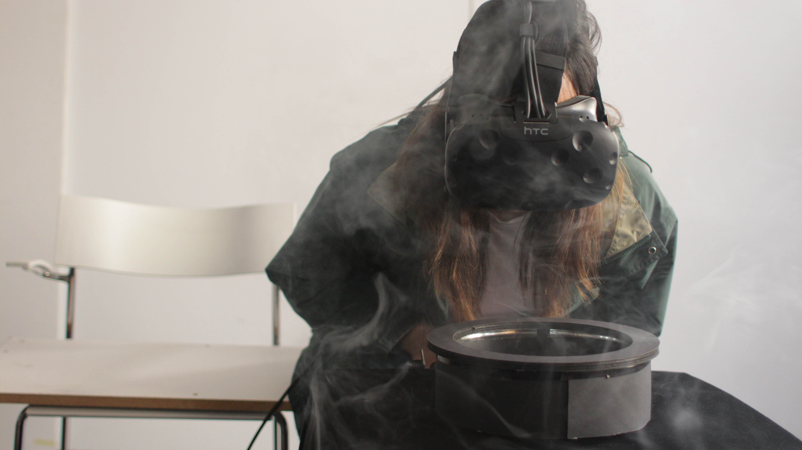

IMMERSIVE DESIGN:
1 week
CIID 2017
TEAM:
Anoushka Garg
Bora Kim
James Zhou
How might we create meaningful interactions between the deceased and their living friends and family? A person’s death shouldn’t mean the end of their presence in the lives of their friends and families. Cemeteries and graveyards in modern societies, by the nature of their construction, invite only static or uni-directional social interactions between the visitors and the deceased. Our experience aims to bridge this static and uni-directional connection through the example of a grave along with virtual reality tools. The proposed interaction will engage the visitor to build an ongoing relationship with the deceased.
The Other Side is an afterlife service created to leave behind a more intimate memory of yourself for your loved ones. Instead of cold tombstones or unpersonalized plots, we provide an immersive experience in which visitors can feel presence and peace.
To prototype this service we use an HTC Vive programmed with 360 videos along with various stage tools to supplement the experience. The service The Other Side primes participants with imagining a close one that may have passed in order to build narrative immersion. The heat lamp, wind, sand pit, bottled scents, rocks and hand holding are used to create spatial immersion by evoking sight, sound, smell, and touch.